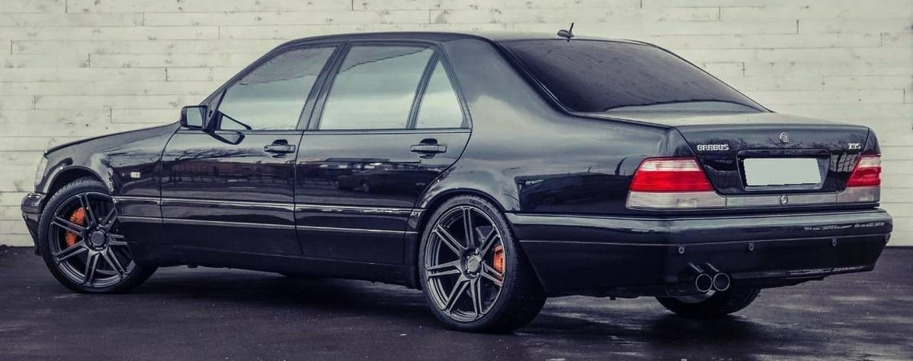
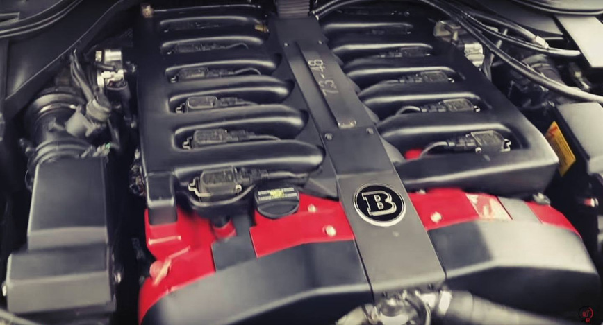

Автомобіль Mersedes Benz w140
Mercedes-Benz W140 - серія флагманських моделей S-класу німецької торгової марки Mercedes Benz.Офіційна презентація відбулася в березні 1991 року на Женевському автосалоні.Серія прийшла на зміну автомобілям Mercedes-Benz W126, які, незважаючи на свій комерційний успіх, морально і технічно застаріли до початку 90-х років.
Нова модель принесла багато нововведень серії: крім більш аеродинамічної корпусу, автомобіль мав унікальне подвійне скління, автоматично закриваються двері і багажник, систему контролю клімату, яка продовжувала працювати після відключення двигуна, а також хвостові антени, що піднімалися при включенні заднього ходу.
Як і його попередник, автомобіль випускався з короткою (SE / W140) і довгою (SEL / V140) колісною базою, а також у версії дводверного купе (SEC або С140) з жовтня 1992 року, пізніше відокремленого в власний CL-клас.
В кінці 1993 року як і всі інші автомобілі марки Mercedes-Benz моделі S-класу була перейменовані з використанням нової номенклатури позначень. Відповідно автомобілі SE, SEL і SEC отримали найменування з буквено-цифровими інвертованими позначеннями. Так, наприклад, 500 SE стали іменувати як S 500, а 500 SEL перейменували в S 500 L. У 1999 році седан W140 S-класу був замінений на нове покоління флагманських моделей компанії - серію Mercedes-Benz W220. Місце купе зайняв новий автомобіль C215. Всього за час виробництва компанія випустила 432 732 примірників 140-ої серії, включаючи 406 710 седанів і 26 022 купе
Двигуни:
- Шестициліндрові
- Восьмициліндрові
- Дванадцятициліндрові
Виробництво:
Складання автомобілів Mercedes-Benz W140 здійснювалася на заводі в Штутгарті, Німеччина. Вартість базової модифікації S280 на 1995 рік на рівні 90 604 німецьких марок, дизельної S350 Turbodiesel - 90 908, флагманської S600 - 206 023 зі стандартною колісною базою і 210 220 с подовженою. Ціна на купе S420 C становила 151 225 марок, а ціна топової двухдверної моделі S600 C дорівнювала 226 435 марок.
Рідкісний екземпляр!!!
Brabus 7.3 S, створений на базі Mercedes-Benz S-Class в кузові W140